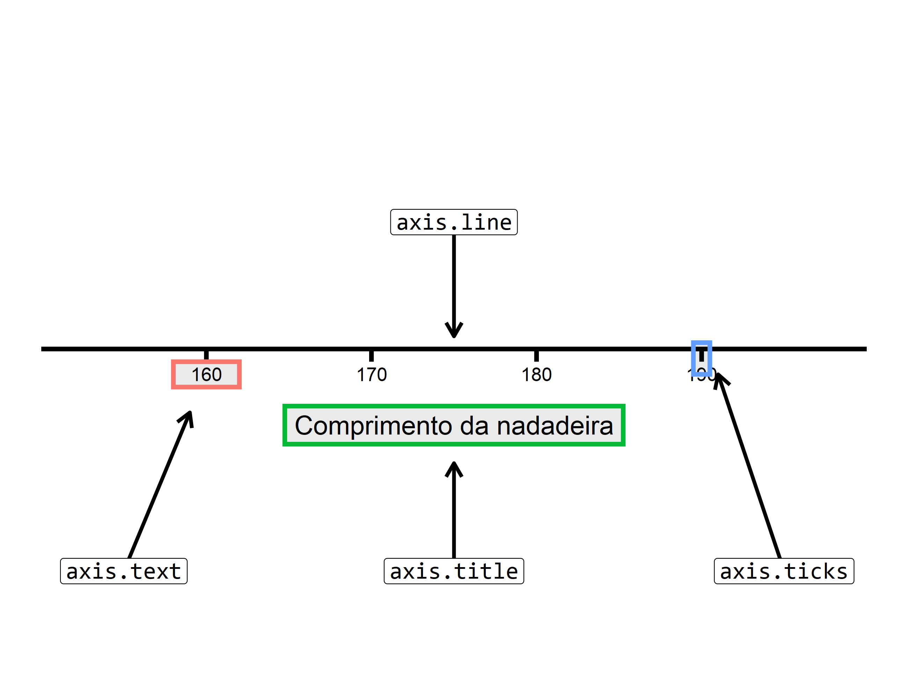

install.packages("palmerpenguins")
library(palmerpenguins)9 Configurando componentes estéticos do gráfico no ggplot2
9.1 Introdução e pré-requisitos
No primeiro capítulo sobre o ggplot, vimos quatro das várias camadas que compõe um gráfico estatístico segundo a abordagem de WILKINSON (2005). Mais especificamente, vimos as três camadas essenciais que estão presentes em qualquer gráfico: os dados utilizados (data), o mapeamento (aesthetic mapping) de variáveis de sua tabela para atributos estéticos do gráfico, e as formas geométricas (geom’s) que representam os seus dados no gráfico. Além dessas camadas essenciais, também explicamos como você pode criar diferentes facetas de um mesmo gráfico.
Neste capítulo, estaremos focando nas outras camadas, mais especificamente, aquelas que controlam aspectos visuais e estéticos do gráfico. Estaremos utilizando novamente neste capítulo, o mesmo gráfico (plot_exemplo) como base para os nossos exemplos.
9.2 Tema (theme) do gráfico
O tema do gráfico, diz respeito a todos os elementos e configurações estéticos que não afetam, ou que não estão conectadas aos dados dispostos no gráfico. Ou seja, os temas não alteram as propriedades perceptíveis do gráfico, mas ajuda você a torná-lo esteticamente agradável (WICKHAM, 2016, p. 169). Em outras palavras, o tema lhe dá controle sobre as fontes utilizadas, o alinhamento do texto, a grossura do grid e das marcações, a cor do plano de fundo do gráfico, etc.
Todos os aspectos temáticos do gráfico são configurados pela função theme(), que possui vários argumentos. Cada argumento dessa função, lhe permite configurar um elemento de seu gráfico. Onde cada um destes elementos, são associados a um tipo de elemento diferente. Por exemplo, o título do gráfico, é um texto, logo, ele é associado ao elemento do tipo texto - element_text(), já as retas dos eixos são associadas ao elemento do tipo linha - element_line().
Os tipos de elemento são apenas uma convenção, para que você saiba qual função element_*() é a apropriada para configurar o elemento desejado. Por exemplo, se o título do gráfico, é um elemento associado ao tipo “texto”, você deve usar a função element_text() para modificar este elemento. Porém, se você quer configurar o background do gráfico, você deve utilizar a função element_rect(), pois este elemento está associado ao tipo “retângulo”. Os diversos tipos de elemento são:
Texto:
element_text().Retângulo:
element_rect().Linha:
element_line().Branco ou vazio:
element_blank().
Você provavelmente está se perguntando o porquê da existência de um tipo de elemento “vazio”. O jornalista americano William Chase, apresentou um ditado na última conferência internacional do RStudio, que representa bem o papel que este tipo de elemento tem a cumprir no ggplot. O ditado diz o seguinte:
“O espaço em branco no gráfico é como o alho que tempera a sua comida. Pegue o tanto que você acha necessário, e então triplique essa quantidade”. William Chase, The Glamour of Graphics, rstudio::conf, 2020.
A noção de espaço, é muito importante no seu gráfico, seja porque você tem itens que estão tomando muito espaço das formas geométricas que estão representando os seus dados no gráfico, ou então, porque você quer tornar a visão de seu gráfico mais leve (ou mais “dispersa”) para o leitor. Por isso, o elemento do tipo “vazio” serve para eliminar elementos que são desnecessários em seu gráfico, dando assim, maior espaço para aqueles elementos que são de fato importantes.
Ao longo dessa seção, estarei utilizando um mesmo gráfico, para exemplificar algumas das principais configurações possíveis em theme(). Para não repetir o código que gera o gráfico, toda vez que alterarmos algo nele, eu vou guardar este gráfico em um objeto que dou o nome de plot_exemplo. Dessa forma, toda vez que quiser alterar algum elemento do gráfico, basta que eu adicione a função theme() a este objeto, onde o gráfico está guardado.
plot_exemplo <- ggplot(data = penguins) +
geom_point(
aes(
x = flipper_length_mm,
y = body_mass_g,
color = species
)
) +
labs(
title = "Relação entre peso e comprimento da nadadeira
em diferentes\nespécies de pinguim",
x = "Comprimento da nadadeira",
y = "Peso corporal",
color = "Espécie"
)
print(plot_exemplo)
9.3 Eliminando elementos do gráfico
Como eu disse, você muitas vezes vai querer eliminar elementos desnecessários e que estão tomando muito espaço de seu gráfico. Para esta tarefa, basta utilizar element_blank() sobre o argumento de theme() que controla este elemento em questão. No exemplo abaixo, estou eliminando o título da legenda, que é controlada por legend.title, e também estou eliminando o título do eixo y com axis.title.y.
plot_exemplo +
theme(
legend.title = element_blank(),
axis.title.y = element_blank()
)
9.4 Alterando a temática de textos
Você possui diversos elementos textuais em seu gráfico, logo abaixo, na Figura 9.1, estou relacionando cada elemento textual ao seu respectivo argumento em theme(). Vale ressaltar, que há outros elementos textuais, como o subtítulo do gráfico, que não está presente em nosso plot_exemplo. Portanto, até os próprios valores do eixo são tratados como textos do gráfico. Como mencionei antes, você precisa da função element_text() para configurar este tipo de elemento.

theme()
Vamos pensar primeiro no título, que é uma parte importante de seu gráfico e que deve possuir algum tipo de destaque. Por enquanto, o único fator que destaca o título do gráfico dos outros elementos textuais, é o tamanho da fonte usada. Porém, e se quiséssemos adicionar outros fatores de destaque? Como por exemplo, utilizar uma fonte em itálico, ou em negrito.
O argumento de theme() responsável por controlar o título do gráfico, é o plot.title, e portanto, utilizo a função element_text() sobre este argumento, para acrescentarmos novos destaques a este título. O argumento de element_text() que afeta o estilo da fonte (negrito, itálico, etc.) é o face. No exemplo abaixo, eu dou o valor "italic" indicando a função que use o estilo itálico sobre o título:
Eu posso também destacar outras áreas do gráfico, como o título da legenda, que é controlado pelo argumento legend.title. Eu costumo reduzir o tamanho deste título, e colocá-lo em negrito, e para isso, utilizo os argumentos size e face. Para colocar algum texto em negrito, você deve utilizar o valor "bold", em face. Eu poderia inclusive, colocar este texto em itálico e negrito (para isso, você deve utilizar o valor "bold.italic").
Vale também destacar, que o argumento size, trabalha por padrão com a unidade milímetros (mm). Porém, como é um pouco contraintuitivo trabalhar com tamanho de fontes nesta unidade, eu costumo transformá-la para pontos (pt). Para isso, o ggplot oferece uma variável (.pt) que já contém o valor necessário para essa transformação. Assim, o que você precisa fazer é colocar o valor em pontos (pt) desejado, e dividi-lo por essa variável (.pt), que contém o valor necessário para a conversão. No exemplo abaixo, estou reduzindo o título da legenda ao tamanho 26 pt.
# Gráfico à esquerda
plot_exemplo +
theme(
plot.title = element_text(face = "italic")
)
# Gráfico à direita
plot_exemplo +
theme(
plot.title = element_text(face = "italic"),
legend.title = element_text(face = "bold", size = 26/.pt)
)

Além destas modificações, você talvez queira mudar o alinhamento do título do gráfico. Atualmente, você pode reparar que este título está alinhado à esquerda do gráfico, ou em outras palavras, está alinhado em relação a borda esquerda do gráfico.
Neste caso, estou me referindo ao alinhamento horizontal do título, e por isso, utilizo o argumento hjust. Este argumento funciona da mesma forma em que o vimos anteriormente, ele pega um número de 0 a 1. Sendo que o valor 0 representa o alinhamento totalmente à esquerda, o valor 0.5 centraliza o texto, e o valor 1 representa o alinhamento totalmente à direita. No exemplo abaixo, estou centralizando o título do gráfico (gráfico à esquerda)
Um outro ponto, que talvez seja de seu interesse, é alterar o espaço entre os elementos do gráfico. Você pode controlar este fator, através da função margin(), sobre o argumento margin de element_text(). Dentro da função margin(), temos 4 argumentos que se referem as bordas do seu texto. Dito de outra forma, esses argumentos definem a borda do texto, na qual você deseja acrescentar o espaço: t (top) se refere ao topo do texto; r (right) se refere à direita do texto; l (left) se refere à esquerda do texto; e b (bottom) se refere à base (ou a borda inferior) do texto.
Por exemplo, podemos dar mais destaque ao título do gráfico, ao adicionar um pouco mais de espaço entre ele e a borda do gráfico. Neste caso, o gráfico está abaixo do título, logo, estamos querendo adicionar espaço na borda inferior (argumento b) do título do gráfico. Em seguida, basta que eu defina no argumento, quanto de espaço eu desejo adicionar (gráfico à direita).
# Gráfico à esquerda
plot_exemplo +
theme(
plot.title = element_text(face = "italic", hjust = 0.5),
legend.title = element_text(face = "bold", size = 26/.pt)
)
# Gráfico à direita
plot_exemplo +
theme(
plot.title = element_text(
face = "italic",
hjust = 0.5,
margin = margin(b = 20)
),
legend.title = element_text(face = "bold", size = 26/.pt)
)

9.5 Plano de fundo (background) e grid
O tema padrão do ggplot pode ser muito esquisito, ou simplesmente “feio” para muita gente. Um de seus elementos que mais recebem críticas, é o plano de fundo do gráfico, que por padrão é colorido de cinza claro. Todos os argumentos de theme(), que controlam os elementos que se encontram no plano de fundo, começam por panel.*. Você pode, por exemplo, alterar as configurações gerais do plano de fundo pelo argumento panel.background, que é associado ao tipo “retângulo” - element_rect().
No exemplo abaixo, estou alterando a cor deste plano de fundo, para uma cor levemente “amarelada”. Lembra quando eu defini que o ggplot trata de forma distinta as formas geométricas de área, onde se você quisesse preencher esta forma com uma cor, você deveria utilizar o argumento fill, ao invés de color? Aqui a mesma coisa ocorre, pois o plano de fundo do gráfico é associado a um formato de área (retângulo).
Por isso, se utilizar o color, você irá colorir apenas as bordas do gráfico, e não preencher o plano de fundo com uma cor. Em ambos argumentos, você pode fornecer um dos nomes de cor que o R consegue reconhecer (por exemplo, "white", "black")1, ou então, você pode fornecer um código HTML dessa cor.
Se antes você não gostava do cinza, você provavelmente está gostando menos ainda dessa cor amarelada. Bem, neste caso podemos ficar então mudar para um branco padrão. Vale destacar que, as linhas do grid já estão na cor branca, por isso, podemos colorir também essas linhas para uma cor diferente, de modo a mantê-las visíveis.
# Gráfico à esquerda
plot_exemplo +
theme(
panel.background = element_rect(fill = "#fffab3")
)
# Gráfico à direita
plot_exemplo +
theme(
panel.background = element_rect(fill = "white"),
panel.grid = element_line(color = "#d4d4d4")
)

Apesar do gráfico estar agora em um tema mais “padrão”, você talvez você ache estranho a forma como as linhas do grid estão no momento. Pois elas estão sem um “limite”, ou aparentam estar “invadindo” o espaço de outros elementos do gráfico. Talvez o que você precise, seja marcar a borda do gráfico, para construir uma caixa, e definir estes limites do grid. Tudo que você precisa fazer, é usar o color em panel.background, para colorir essas bordas.
Um outro componente que faz parte do gráfico, é o plano de fundo de toda a área do gráfico. Ou seja, toda a área de sua tela que engloba os títulos, os valores, as legendas e o espaço do gráfico. Essa área é controlada pelo argumento plot.background. Não sei por que você faria isso, mas com esse argumento, você pode por exemplo, pintar toda a área do gráfico de azul claro.
# Gráfico à esquerda
plot_exemplo +
theme(
panel.background = element_rect(
fill = "white",
color = "#222222"
),
panel.grid = element_line(color = "#d4d4d4")
)
# Gráfico à direita
plot_exemplo +
theme(
panel.background = element_rect(
fill = "white",
color = "#222222"
),
panel.grid = element_line(color = "#d4d4d4"),
plot.background = element_rect(fill = "#abb3ff")
)

9.6 Eixos do gráfico
Todos os elementos que se encontram nos eixos do gráfico, são controlados pelos argumentos de theme() que se iniciam por axis.*. Você pode ver os argumentos que controlam cada um dos componentes do eixo, pela Figura 9.2.
No tema padrão do ggplot, a linha do eixo (axis.line) já não aparece. Portanto, se você quiser eliminar completamente um eixo do seu gráfico, você precisa apagar apenas os outros três componentes. Sendo este, um outro motivo de estranhamento de várias pessoas sobre o tema padrão do ggplot. Por isso, talvez seja interessante para você incluir no seu gráfico, as linhas do eixo, e para esse fim, basta redefinir o seu argumento (axis.line) com element_line().
Um detalhe muito importante, é que a função theme() possui tanto o argumento geral do componente do eixo (e.g. axis.line), que afeta ambos os eixos (x e y) ao mesmo tempo, quanto o argumento que afeta os eixos individualmente (e.g. axis.line.x e axis.line.y). Isso vale para todos os outros três componentes do eixo, e, portanto, caso você queira que a modificação afete apenas um dos eixos, você deve utilizar os argumentos que possuem o eixo no nome, ao invés dos argumentos gerais.

Uma configuração que aplico com bastante frequência em meus gráficos, é escurecer os valores do eixo (axis.text). Por padrão, os valores vem em um cinza claro, e por causa disso, a leitura desses valores pode ficar muito prejudicada ao exportar esse gráfico, e incluí-lo em um artigo, informativo ou relatório que estou escrevendo. Desse modo, no exemplo abaixo, além de reposicionar as linhas dos eixos, eu também utilizo o argumento color em axis.text, para colorir esses valores com uma cor mais escura.
Além dessas modificações, para garantir que o meu leitor consiga ler esses números, eu ainda aumento levemente o tamanho dos valores do eixo, pelo argumento size. Como eu disse anteriormente, esse argumento trabalha, por padrão, com milímetros. Você pode novamente utilizar a variável .pt para transformar esse valor para pontos (pt).
plot_exemplo +
theme(
axis.line = element_line(linewidth = 0.8, color = "#222222"),
axis.text = element_text(size = 11, color = "#222222")
)
9.7 Configurações temáticas em uma legenda
A legenda de seu gráfico, é um guia que lhe mostra como os elementos visuais percebidos em seu gráfico, se traduzem de volta aos valores observados em sua base de dados. Em outras palavras, é a legenda que mapeia as cores, formas e tamanhos dos elementos de seu gráfico, de volta aos valores apresentados em sua base de dados WILKINSON (2005), WICKHAM (2016). Sem a legenda, nós não sabemos qual o valor que a cor vermelha em nosso gráfico se refere, nem quanto o tamanho de um objeto, representa em nível de uma variável numérica.

Temos na Figura 9.3, os componentes de uma legenda em um gráfico do ggplot, e os seus respectivos argumentos em theme(). Há outros argumentos relacionados em theme(), como legend.text.align, legend.margin e legend.position, que não afetam a temática de algum componente específico da legenda, mas sim, o alinhamento de certos componentes, ou a margem da legenda em relação ao gráfico, ou a posição geral da legenda.
Como exemplo, podemos preencher o plano de fundo da legenda com alguma cor específica em legend.background (argumento fill), assim como podemos contornar as bordas dessa legenda com alguma outra cor (argumento color). Podemos alterar o alinhamento do texto da legenda, ou mais especificamente, os rótulos de cada item da legenda, através de legend.text.align, ao fornecermos um número entre 0 (alinhado totalmente à esquerda) e 1 (alinhado totalmente à direita). Também podemos utilizar a função element_text() em legend.title, para alterarmos a fonte (argumento family), o tamanho (argumento size) o estilo da fonte (argumento face: bold - negrito, italic - itálico, bold.italic - negrito e itálico), e inclusive a cor (argumento color) utilizada no título dessa legenda.
Além dessas configurações, possuímos um bom controle sobre a posição da legenda ao longo da área do gráfico, através do argumento legend.position. Por padrão, toda legenda gerada pelo ggplot, será posicionada à direita do gráfico, entretanto, esse padrão tende a ocupar muito espaço do gráfico, por isso eu particularmente prefiro posicionar as minhas legendas, na parte inferior do gráfico. Para isso podemos fornecer o valor bottom ao argumento. O argumento legend.position, aceita outros quatro valores pré-definidos: top (topo do gráfico); left (esquerda do gráfico); right (direita do gráfico); none (nenhum local do gráfico).
Você pode utilizar o valor pré-definido none em legend.position, para eliminar completamente a legenda do gráfico. Isso é uma boa forma de aumentar o espaço do gráfico, porém, você elimina uma fonte importante de informação, portanto, considere com cuidado se as informações dispostas em sua legenda, são irrelevantes para o seu gráfico. Para além das posições pré-definidas, podemos inclusive posicionar a nossa legenda, para dentro do gráfico, através de legend.position. Para isso, você precisa fornecer dentro de um vetor, a posição (x, y) no plano cartesiano em que você deseja centralizar a sua legenda, de acordo com um valor entre 0 e 1. Você pode interpretar esse sistema, como percentis da distribuição dos valores presentes no eixo. Ou seja, se você fornecer o vetor c(0.1, 0.9), a legenda será posicionada no 10° percentil da escala do eixo x, e no 90° percentil da escala do eixo y.
# Gráfico à esquerda
plot_exemplo + theme(
legend.background = element_rect(fill = "#cffff0", color = "black"),
legend.text.align = 0.5,
legend.title = element_text(face = "bold", color = "#008059"),
)
# Gráfico à direita
plot_exemplo + theme(
legend.position = "bottom"
)

# Gráfico à esquerda
plot_exemplo + theme(
legend.position = "none"
)
# Gráfico à direita
plot_exemplo + theme(
legend.position = c(0.1, 0.8)
)

Para mais, temos algumas outras configurações possíveis sobre a margem da legenda em relação à área gráfico, através do argumento legend.margin e da função margin(). Ou seja, nós podemos afastar a legenda da área do gráfico, ou da base do gráfico. Em outras palavras, nós podemos adicionar espaço na base (b), no topo (t), à direita (r), ou à esquerda (l) da legenda, através da função margin().
Por último, nós também podemos configurar os itens da legenda, através do argumento legend.key. Neste argumento, você possui todas as opções de customização oferecidas pela função element_rect(). Além de preencher o plano de fundo dos itens (argumento fill), ou de criar uma borda (argumento color), também temos a opção de alterar o tamanho desses itens (argumento size).
# Gráfico à esquerda
plot_exemplo + theme(
legend.margin = margin(l = 90, b = 70)
)
# Gráfico à direita
plot_exemplo + theme(
legend.key = element_rect(fill = "#c4e2ff", color = "black")
)

9.8 Alterando a temática em facetas
Quando você adiciona facetas a um gráfico, você possui novos elementos que talvez sejam de seu interesse configurá-los. Por exemplo, o título de cada faceta, ou o plano de fundo desse título. Todos os argumentos de theme() que controlam elementos das facetas do gráfico, começam por strip.*. No exemplo abaixo, eu estou redefinindo as cores do interior e das bordas do plano de fundo da faceta, além da cor do título da faceta.
plot_exemplo +
facet_wrap(~island, nrow = 3) +
theme(
strip.background = element_rect(color = "#222222", fill = "#d1fff4"),
strip.text = element_text(color = "black")
)
9.9 Alterando as fontes do seu gráfico
Este é provavelmente o tópico de maior interesse para você ao customizar os seus gráficos, pois a tipografia traz, em geral, um grande impacto sobre o visual de uma imagem. A não muito tempo atrás, incluir diferentes fontes de seu sistema (ou fontes customizadas) em seus gráficos, era uma tarefa árdua e que podia gerar uma grande dor de cabeça.
Essa dificuldade ocorre em qualquer programa2, linguagem ou sistema que trabalha com diversos device’s gráficos, como é o caso do R.
Porém, tal situação mudou nos anos mais recentes. Hoje, incluir diferentes fontes em seus gráficos não é mais uma dor de cabeça tão grande, graças às melhorias feitas pelo time interno do R (The R Core Team) além de toda a comunidade internacional de R, que tem contribuído com pacotes como ragg e showtext.
Antes de explicarmos quais são as soluções necessárias para que você possa utilizar qualquer fonte que esteja em sua máquina, em seus gráficos do ggplot, vou mostrar quais são as três opções de fonte, que são garantidas de funcionar no ggplot em qualquer máquina. Essas três opções são:
sans: Fonte Arial.serif: Fonte Times New Roman.mono: Fonte Courier New.
Portanto, em qualquer máquina que você estiver, você pode utilizar um desses três nomes (sans, serif e mono) para se referir a uma dessas três fontes acima, em seu gráfico do ggplot.
Neste momento, vale a pena refletir se você deseja variar as fontes utilizadas ao longo do gráfico, ou se você deseja utilizar sempre a mesma fonte em todos os textos dispostos no gráfico. Caso você queira variar a fonte, você deve criar uma nova coluna em sua tabela, contendo o nome da fonte que você deseja utilizar para cada observação. Em seguida, você deve conectar essa variável ao argumento family, dentro de aes(). Contudo, se você quer manter essa fonte fixa, basta fornecer o nome dessa fonte ao argumento family, porém, dessa vez, fora da função aes().
set.seed(1)
tab <- data.frame(
x = rnorm(100),
y = runif(100),
fonte = sample(
c("sans", "serif", "mono"),
size = 100,
replace = TRUE
)
)
# Variar a fonte utilizada ao longo do gráfico
ggplot(tab) +
geom_text(
aes(x = x, y = y, family = fonte, label = fonte)
)
# Ou mater a fonte fixa ao longo de todo o gráfico
ggplot(tab) +
geom_text(
aes(x = x, y = y, label = fonte),
family = "serif"
)

Portanto, nós definimos a fonte utilizada nas funções geom através do argumento family, ao fornecer o nome da fonte que desejamos utilizar. Por outro lado, para alterarmos a fonte em elementos temáticos (elementos que não dizem respeito, ou que não estão diretamente conectados com os seus dados) do gráfico, essas configurações devem ser realizadas dentro da função theme. Basta utilizarmos novamente o argumento family presente em element_text(), e definirmos o nome da fonte que desejamos empregar.
Um atalho útil, caso você deseja utilizar a mesma fonte em todos os elementos temáticos do gráfico, se trata do argumento text (que se refere a todos os elementos temáticos do tipo “texto”) na função theme(), e definir com a função element_text() a fonte utilizada:
Porém, caso você deseja utilizar uma fonte diferente em cada componente temático do gráfico, você obrigatoriamente deve definir separadamente a fonte a ser utilizada, em cada argumento de theme() que corresponde a esses componentes estéticos.
# Gráfico à esquerda
ggplot(tab) +
geom_point(aes(x = x, y = y)) +
labs(
title = "Um título interessante",
subtitle = "Um subtítulo também interessante"
) +
theme(
text = element_text(family = "sans")
)
# Gráfico à direita
ggplot(tab) +
geom_point(aes(x = x, y = y)) +
labs(
title = "Um título interessante",
subtitle = "Um subtítulo também interessante"
) +
theme(
plot.title = element_text(family = "serif"),
plot.subtitle = element_text(family = "mono"),
axis.text = element_text(family = "serif")
)

9.9.1 Utilizando novas fontes em seus gráficos
“At its core text and fonts are just very messy, with differences between operating systems and font file formats to name some of the challenges”. (PEDERSEN, 2020).
Portanto, o ggplot oferece (de “fábrica”) 3 fontes diferentes. Mas e se você precisa utilizar uma outra fonte que não está entre essas 3 opções? Em resumo, para que você possa utilizar qualquer outra fonte em seus gráficos, o R precisa saber onde está essa fonte em seu sistema.
Para que o R passe a “enxergar” uma fonte qualquer em seu sistema, precisamos de certa forma “importar” essa fonte para dentro do R. Em edições passadas desta obra, mostramos como realizar esse processo através do pacote extrafont. Porém, esse é um pacote já bem antigo do R e que depende de um outro programa ainda mais antigo. Pela falta de manutenção, o pacote extrafont deixou de funcionar tão bem em versões mais recentes do R, especialmente após a versão 4.1.
Por esse motivo, vamos apresentar a seguir, as soluções mais recentes e modernas para esse problema. Hoje, temos três soluções principais, que são: 1) os devices gráficos do pacote ragg; 2) os devices gráficos produzidos por Cairo Graphics; 3) as funções do pacote showtext. Nessa seção vamos demostrar as duas primeiras soluções citadas.
9.9.1.1 O pacote ragg
O pacote ragg é um pacote do R que provê um conjunto de devices gráficos que são baseados na biblioteca AGG (Anti-Grain Geometry Library), desenvolvida por Maxim Shemanarev. Graças aos esforços de Thomas Lin Pedersen, e de muitos outros colegas, esse pacote trouxe uma certa “revolução” ao mundo dos gráficos do R.
install.packages("ragg")Pois esse pacote oferece não apenas devices gráficos que são mais rápidos e que produzem imagens de maior qualidade do que os devices nativos do R, que pertencem ao pacote grDevices; mas também, ragg é o primeiro pacote que conseguiu efetivamente resolver todos os problemas do uso de fontes em gráficos do R, ao trazer um suporte incrível para praticamente todas as operações e configurações sobre textos que você pode imaginar.
Sempre que você faz uma referência a uma fonte “não-padrão” do R (por exemplo, a fonte Calibri), os devices do pacote ragg iniciam automaticamente um processo de busca atrás dessa fonte. Veja o exemplo abaixo, em que utilizo três fontes diferentes. Todas essas fontes geralmente já vem instaladas de “fábrica” em qualquer sistema Windows, logo, você deve ser capaz de executar o código abaixo sem problemas.
grafico <- ggplot(mpg) +
geom_point(
aes(hwy, displ)
) +
labs(
title = "Relação entre quilometragem e a largura do pistão",
subtitle = "Baseado em uma amostra de 234 veículos"
) +
theme(
text = element_text(family = "Segoe UI"),
plot.title = element_text(family = "Comic Sans MS"),
plot.subtitle = element_text(family = "Calibri")
)
ragg::agg_png(
"output.png", width = 2000, height = 1400,
res = 300
)
print(grafico)
dev.off()O gráfico que foi armazenado neste arquivo output.png está exposto logo abaixo. Perceba que todas as três fontes foram encontradas pelo device agg_png() e, consequentemente, foram corretamente incluídas no gráfico.

output.pngPortanto, desde que a fonte que você deseja utilizar esteja instalada em seu sistema operacional, você pode tranquilamente utilizar essa fonte em seus gráficos do ggplot, ao salvá-lo em um arquivo utilizando um dos devices gráficos disponíveis no pacote ragg.
Além disso, em versões mais recentes do RStudio, você pode utilizar os devices gráficos do pacote ragg para visualizar os seus gráficos dentro do painel de Plots. Basta acessar o painel de configurações globais da ferramenta, através de Tools \(\rightarrow\) Global options..., em seguida, selecionar a aba de Graphics dentro da seção General, depois, selecionar a opção AGG em Backend, como mostrado na Figura 9.4.

ragg no painel de Plots do RStudio
9.9.1.2 Arquivos de representação vetorial (PDF, SVG e PS)
Você provavelmente percebeu na seção anterior que, o pacote ragg oferece apenas devices gráficos que utilizam representações matriciais (como PNG, JPEG e TIFF). Porém, e se você quisesse salvar o seu gráfico em um arquivo PDF? ou SVG? Como você faria para incluir as fontes que você deseja utilizar?
A resposta para essa pergunta reside nas funções cairo_pdf(), svg() e cairo_ps(). Todas essas funções pertencem ao pacote grDevices (logo, são funções nativas do R). Porém, essas funções constroem os seus arquivos utilizando-se das engines produzidas por Cairo Graphics.
Portanto, se desejamos salvar o exato mesmo gráfico que mostramos na seção anterior (o qual inclui três fontes diferentes), porém, dessa vez em um arquivo PDF por exemplo, precisamos apenas criar o arquivo PDF com a função cairo_pdf(), como demonstrado abaixo:
grafico <- ggplot(mpg) +
geom_point(
aes(displ, hwy)
) +
labs(
title = "Relação entre quilometragem e a largura do pistão",
subtitle = "Baseado em uma amostra de 234 veículos"
) +
theme(
text = element_text(family = "Segoe UI"),
plot.title = element_text(family = "Cambria", face = "bold"),
plot.subtitle = element_text(family = "Calibri")
)
cairo_pdf("output.pdf", width = 8, height = 5)
print(grafico)
dev.off()Sendo assim, se o seu gráfico inclui alguma fonte não-padrão, mas que está instalada em seu computador, e você deseja salvá-lo em um arquivo PDF, SVG ou EPS, utilize as funções cairo_pdf(), svg() e cairo_ps(). Pois as engines produzidas por Cairo Graphics conseguem incluir um intervalo muito maior de fontes em seu arquivo.